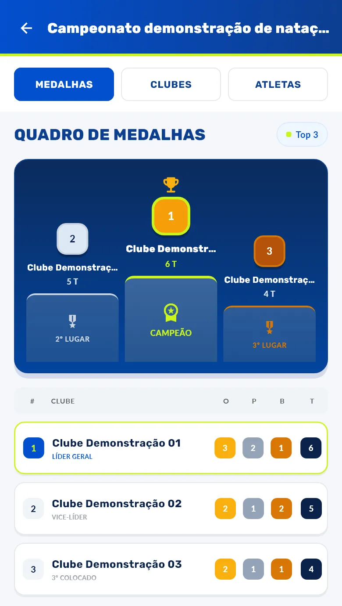

Quadro de medalhas
Quem lidera o quadro de medalhas por clube, e quais clubes e atletas estão inscritos em cada evento.

| Posição | Clube | Ouro | Prata | Bronze | Total |
|---|---|---|---|---|---|
| 1 | Clube Demonstração 01 | 3 | 2 | 1 | 6 |
| 2 | Clube Demonstração 02 | 2 | 1 | 2 | 5 |
| 3 | Clube Demonstração 03 | 2 | 1 | 1 | 4 |